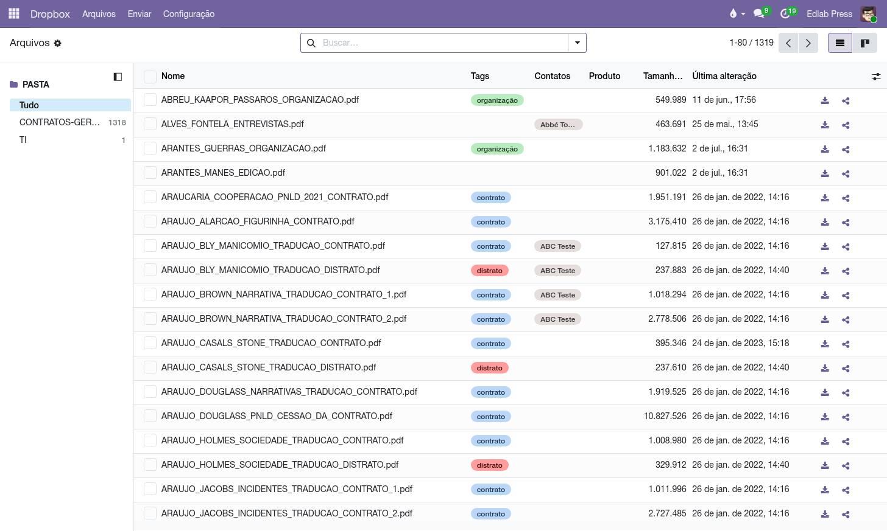
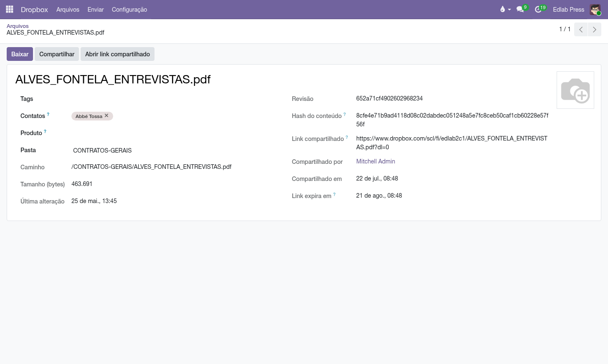

Arquivos no Dropbox
Os PDFs da editora — contratos, capas, miolos — continuam morando no Dropbox. O que muda é o porteiro: o Odoo decide quem lê e quem grava cada pasta, compartilha com prazo de validade, e liga cada arquivo aos autores, aos títulos e a tags livres.
Visão geral
O Dropbox tem uma credencial só — a conta da editora — e por isso não sabe dizer "o marketing lê, o editorial grava". Este módulo resolve exatamente isso:
- O Dropbox é a estante. Nenhum arquivo é copiado para o Odoo; o espelho guarda só metadados (nome, tamanho, revisão) e, para imagens, uma miniatura pequena.
- O Odoo é o porteiro. Cada pasta mapeada nomeia os grupos que leem e os que escrevem. A trava é no servidor — regra de registro no ORM —, não um menu escondido. Ninguém recebe a senha do Dropbox.
- Compartilhar é um ato deliberado. O link público do Dropbox fura qualquer portão (quem tem o link, acessa) — por isso criá-lo exige permissão de escrita, pede confirmação, fica assinado (quem, quando) e nasce com prazo de validade.

Configuração
Grupos de acesso: o módulo cria Dropbox Files / Usuário (vê o app; o que ele alcança é decidido pasta a pasta) e Dropbox Files / Gerente (enxerga todas as pastas e arquivos, cura as tags e as credenciais). Mapear pastas novas — e mudar caminhos e permissões — é ato de administrador do sistema, não do gerente. E escrever no Dropbox (enviar, compartilhar) exige estar num grupo de escrita da pasta, seja quem for: configurar a estante é um poder, enchê-la é outro.
Multiempresa por construção: cada empresa da base tem a sua conta do Dropbox, as suas pastas e as suas tags — quem é de uma empresa não vê as estantes da outra, antes mesmo de qualquer grupo entrar na conversa. O Dropbox é um dos corpos do chassi Cloud Files, o mesmo que serve o Google Drive e o GitHub: o portão, os vínculos e a disciplina são idênticos nos três apps.
Conta do Dropbox (uma vez por empresa, pelo gerente):
- Crie um app Scoped access em dropbox.com/developers/apps, com as permissões de leitura e escrita de arquivos e de compartilhamento (o passo a passo completo, com os dois comandos que geram o token, está no NOTES.md do módulo).
- Autorize o app logado na conta da editora e troque o código pelo refresh token — é ele que não expira.
- Preencha : App Key, App Secret, Refresh Token — e use Testar conexão. Em base multiempresa, uma conta para cada empresa.
Prazo dos links: na mesma Conta, Links compartilhados expiram após (dias) — padrão 30. Compartilhar de novo renova o prazo; 0 cria links sem validade.
O Dropbox só honra expiração de link em plano pago (Plus, Professional ou Business). Em conta gratuita a criação do link com prazo é recusada — o erro sai explicado, e a saída é zerar o prazo ou fazer upgrade.
Pastas e permissões
- Como administrador do sistema, abra e crie um mapeamento: um nome e o caminho real no Dropbox (ex.: /Editorial/Capas). Gerentes veem as pastas, mas não as criam nem as alteram.
- Escolha os grupos de Leitura e os de Escrita. Escrever implica ler. Pasta sem grupo de leitura é visível só para gerentes — o padrão seguro.
- Se quiser a árvore inteira, ligue Incluir subpastas. Uma subpasta que tiver mapeamento próprio é pulada pelo sync da pasta-mãe: o mapeamento mais específico manda, e o largo nunca vaza o que o estrito protege.
- Clique em Sincronizar. Os arquivos aparecem na lista — só os metadados; nenhum byte entra no Odoo.

O dia a dia
- Baixar — abre o arquivo em nova aba por um link temporário que o Dropbox expira em 4 horas. PDFs abrem direto no navegador.
- Enviar — o menu sobe um arquivo ou uma braçada deles para uma pasta em que você tenha escrita: escolha-os no seletor do sistema ou arraste-os para o campo de arquivos. Cada um viaja com o seu próprio nome e o Odoo não guarda cópia depois. Nunca sobrescreve em silêncio: nome repetido vira arquivo (1).pdf.
- Galeria — a segunda visão da lista mostra cartões com miniatura real das imagens (JPG, PNG, TIFF…), geradas pelo Dropbox na sincronização. PDF não tem miniatura — é limite do Dropbox, não escolha nossa.
Compartilhar com prazo
- No arquivo, clique em Compartilhar. O sistema confirma que você entende que o link é público.
- O link nasce com o prazo configurado e fica gravado no arquivo: Link compartilhado, Compartilhado por, Compartilhado em e Link expira em.
- Vencido o prazo, o Dropbox mata o link. Pediram de novo? Clique Compartilhar outra vez: o mesmo link ganha um novo prazo.

Autores, títulos e tags
Cada arquivo aceita vários contatos (um contrato com três autores aponta para os três), um produto (o título a que pertence) e tags livres ("contrato", "capa", "PNLD") cujo vocabulário o gerente cura em .
- Na lista, os vínculos se editam ali mesmo — e com seleção múltipla: marque dez contratos do mesmo autor, edite um, e vale para os dez.
- O filtro Ainda sem vínculo mostra o que falta classificar.
- Quem pode vincular é quem tem escrita na pasta do arquivo — a mesma régua do envio.
Do outro lado da ponte, a ficha do contato e a do produto ganham um botão com a contagem de arquivos, que abre a lista já filtrada. A contagem respeita as permissões: ela só promete o que a pasta deixa abrir — quem não tem o módulo nem vê o botão.

O que o "arquivar" faz (e não faz)
Arquivar, no Odoo, tira o registro das listas sem apagá-lo. Neste módulo ele acontece de dois jeitos: manualmente, ou sozinho quando a sincronização nota que um arquivo sumiu da pasta (alguém apagou ou moveu direto no Dropbox) — o registro é arquivado em vez de excluído, para o histórico de compartilhamentos não se perder.
Nada acontece no Dropbox. O módulo não tem sequer código de apagar ou mover arquivos lá; as únicas escritas são o envio e o link de compartilhamento. Arquivar mexe só no espelho: a estante fica intacta, a ficha sai da gaveta.
Limitações conhecidas
- Miniatura só de imagem — PDF não tem prévia; o Dropbox não a gera pela API.
- Expiração de link exige plano pago do Dropbox.
- Sincronização uma vez por dia — automática, de madrugada, pasta a pasta; o botão da pasta continua para quem não pode esperar, e cada envio sincroniza na hora. Aviso em tempo real (webhook) exigiria expor o servidor à internet — fase futura.
- Envio na raiz — o upload deposita na raiz da pasta mapeada, ainda sem escolher subpasta.
Perguntas frequentes
Quem tem o link compartilhado precisa de Odoo?
Não — e é por isso que criar o link é restrito, confirmado, assinado e com prazo. O link é a única
porta que não passa pelo porteiro.
Apaguei um arquivo no Dropbox. O que o Odoo faz?
No próximo sync o registro é arquivado (não excluído). O arquivo em si o módulo nunca apaga.
Por que uma pasta não aparece para um usuário?
Ou ele não tem o grupo Dropbox Files / Usuário, ou nenhum grupo dele está na
Leitura/Escrita da pasta. Pasta sem grupos é
só dos gerentes.
Sou gerente (ou administrador) e o Compartilhar foi recusado.
Escrever no Dropbox exige estar num grupo de Escrita da pasta —
o cargo não substitui a permissão. Peça ao administrador para incluir o seu grupo na pasta.
O upload dá erro de nome.
O envio nunca sobrescreve: se o nome já existe, o Dropbox renomeia para
arquivo (1).ext — confira no próximo sync.
- Contratos de direitos autorais — o contrato jurídico que o PDF do Dropbox documenta.
- Papéis de acesso — os grupos da casa que as pastas usam como régua.
Glossário
Todo documento do sistema carrega um prefixo na numeração — CO/2026/00001 é um acerto, AT/2026/00042 é um chamado. A lista é a mesma em todos os manuais:
| Prefixo | O que é |
|---|---|
C | Pedido de consignação: o pedido que põe livros na prateleira do cliente — C00001, no lugar do S da venda comum. |
CO/ | Consignação, o documento do acerto: registra o que o cliente vendeu e vira venda — CO/2026/00001. |
CR/ | Retorno de consignação: o documento que pede a devolução dos exemplares da prateleira — CR/2026/00001. |
CA | Auditoria de consignação: reconstrói o saldo da prateleira do cliente pelas notas fiscais e registra o ajuste — CA00001. |
CP/ | Campanha de consignação: o sortimento-alvo por canal — quantos exemplares de cada título as prateleiras devem ter — CP/2026/0001. |
AC/ | Acordo de Consignação: o contrato com a livraria, dono da prateleira — AC/2026/00001. |
COM/OUT/ | A série da remessa de consignação ao cliente, do armazém à livraria — COM/OUT/2026/00001, no espelho do WH/OUT. |
COM/MOV/ | A série dos fluxos internos de prateleira da consignação — COM/MOV/2026/00001. |
COM/IN/ | A série do retorno de consignação, da prateleira ao armazém — COM/IN/2026/00001, no espelho do WH/IN. |
REM/ | Remessa: a nota de simples remessa, sem cobrança — a numeração vem do diário fiscal REM. |
COL/ | Coleta: o lote do pedido de coleta às transportadoras — COL/2026/00001. |
AT/ | Atendimento: o chamado nascido do e-mail comercial — AT/2026/00001. |
MBX/ | O lote de envio de metadados à Metabooks — MBX/2026/00001. |
Impostos de Direitos Autorais/ | O lote da fatura acumuladora do IRRF retido dos autores no mês. |
Royalties entre Empresas/ | O lote da fatura acumuladora de royalties entre as empresas da casa. |
| Do próprio Odoo | |
S | Pedido de venda comum — S00001; o pedido de consignação usa o C no lugar. |
WH/OUT | Entrega comum do armazém: a transferência de saída padrão do Odoo. |
WH/IN | Recebimento do armazém: a transferência de entrada padrão do Odoo. |
Bases antigas guardam transferências nas séries COM/ e RET/, de antes da separação por direção — o histórico não é renumerado.